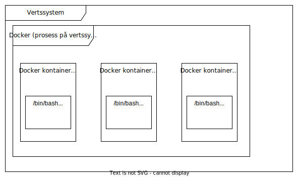
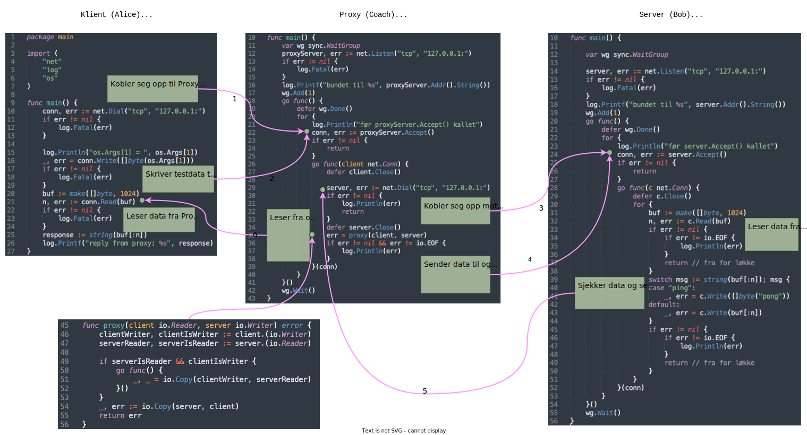

Seminar III: Datasikkerhet (nettverk, TCP, kryptering, proxy)
Forkunnskapskrav: grunnleggende systemadministrasjon fra CLI, grunnleggende Git og Github, Go moduler, go build, go test og grunnleggende programmering i Go (forstå package, import, func main() og noen funksjoner fra pakker fmt, os, io, log, bufio, math, bytes, strings, strconv, net, sync).
Aktivitetene og mål på seminaret III er:
- Installere Wireshark på vertssystemet og tcpdump på det virtuelle systemet.
- Kjenne til klient/server og node-til-node (en. peer to peer) arkitekturer for kommunikasjon og fordeler og ulemper med disse.
- Kunne konfigurere og utføre klient-, server- og proxyprosesser i adskilte Docker kontainere.
- Kunne implementere primitiv kryptering i en gitt kodebase.
- Kunne fange opp og tolke TCP pakker, som sendes mellom to prosesser ved å "sniffe" på en prosess og ved å "sniffe" fra en tredje prosess, som er mellom to prosesser (proxyprosess).
- Kunne forklare utfordringene med sikkerhet i åpne nettverk ved hjelp av simulering i et Docker nettverk.
- Demonstrere kunnskap fra seminar I og seminar II.
VIKTIG! Det kan være feil i all eksempelkode, derfor er det viktig å teste koden både manuelt og eventuelt med enhetstester. Det er ikke garantert at eksemplene som er beskrevet her, vil gi nøyaktig samme output på deres vertssystemer. Instruksjonene som er gitt i Seminar III er ikke like detaljerte som i Seminarene I og II. Det forventes at studentene skal forsøke å finne løsning selv i tilfeller hvor noen av detaljene i instruksjonene er utelatt.
1 Plan for seminaret
| Plan for seminar I | |||
|---|---|---|---|
| Dato | Tid | Aktivitet | Godkjenningskrav |
| 17.04 (aud B1 018) | 8:15 - 8:30 | Introduksjon og registrering. | |
| 17.04 | 8:30 - 9:00 | Vi danner en adskilt gruppe for de som har utfordringer med installasjon og konfigurasjon av programvaren på sin platform. De som har fått sin datamaskin konfigurert, oppfordres til å bidra til at andre får det gjort. | Temaene for dette seminaret blir implementering av kommunikasjonssesjoner mellom to eller flere noder, kryptering og overvåkning. |
| 17.04 | 9:15 - 9:30 | Presentasjon av programvare for overvåkning av nettverkstrafikk. | |
| 17.04 | 9:30 - 10:00 | tcpdump og Wireshark (oppgavesett #1) | Demonstrere at man kan sette opp et nettverk ved hjelp av Docker kontainere (finne IP adresser til kontainere og bestemme seg for portnummer for at prosessene kan samarbeide mellom kontainere). Konfigurere og utføre tcp_client.go og tcp_server.go. Demonstrere at man kan fange opp pakker fra trafikken mellom klient- og serverprosesser, som utfører i forskjellige Docker kontainere. |
| 17.04 | 10:15 - 11:00 | Fortsetter med tcpdump og Wireshark (oppgavesett #2) | 17.04 | 11:15 - 12:00 | Kryptering (oppgavesett #2) | Demonstrere at man forstår og kan implementere primitiv kryptering i en gitt kodebase. |
| 21.04 (aud B1 007) | 8:15 - 8:30 | Proxy-server (oppgavesett #3) | Demonstrere at man forstår og kan konfigurere en "dum" proxyserver og fange datapakker som går gjennom en virtuell instans av Linux operativsystem (Docker kontainer). |
| 21.04 | 8:30 - 9:00 | Fortsetter med Proxy-server (oppgavesett #3) | |
| 21.04 | 09:15 - 10:00 | Fortsetter med Proxy-server (oppgavesett #3) | |
| 21.04 | 10:15 - 12:00 | Godkjenning | |
2 tcpdump og Wireshark
Wireshark er et verktøy for overvåkning av nettverkstrafikk mellom noder i et nettverk. tcpdump er et kommandolinjeverktøy for samling av datapakkene sendt mellom noder i et nettverk. I dette seminaret skal tcpdump brukes for å fange opp datapakker sendt mellom to virtuelle noder i et virtuelt nettverk innen Docker applikasjonen. Wireshark skal brukes for å vise frem pakkefangst på en brukbar måte på vertssystemet. Vertssystemet her betegner det systemet som er installert på brukerens datamaskin (i vår gruppe er det nesten utelukkende MS Windows eller macOS). Virtuelle noder betegner kontainere skapt fra en image i Docker applikasjonen, som utfører på vertssystemet (se Figur 1).
Figur 1. Oversikt over Docker kontainere for Seminar III.
- Gjør en fork av repositorien REP01:
https://github.com/uia-worker/sem03simpleserver.git - Gjør en fork av repositorien REP02:
https://github.com/uia-worker/sem03simpleclient.git - Antar følgende tilstand for Docker images på vertssystemet (for deg vil tilstanden være annerledes):
$ docker images REPOSITORY TAG IMAGE ID CREATED SIZE minubuntu version6 4d140b9650cb 2 weeks ago 268MB ubuntu latest 58db3edaf2be 2 months ago 77.8MB docker run --name alice -d -i ubuntudocker run --name bob -d -i ubuntu- Eksempel på tilstand for Docker kontainere (for deg vil tilstanden være annerledes):
$ docker container ls CONTAINER ID IMAGE COMMAND CREATED STATUS PORTS NAMES 76d3491f8427 ubuntu "/bin/bash" 11 seconds ago Up 10 seconds bob f2416d5010d9 ubuntu "/bin/bash" 2 minutes ago Up 2 minutes alice - "Gå inn i" både alice og bob ved hjelp av kommandoen
docker exec ...(du får to terminalvinduer, en for hver av disse to Docker kontainerene) - I både alice og bob installer de nødvendige verktøyene (hvis du bruker en "fersk" ubuntu image):
$ apt-get update $ apt-get install -y tcpdump $ apt-get install -y iproute2 $ apt-get install -y git $ apt-get install -y golang $ apt-get install -y nano - I alice klone koden fra din fork av REP02 (klientapplikasjonen)
- Gå inn i mappen "sem03simpleclient"
- I bob klone koden fra din fork av REP01 (serverapplikasjonen)
- Gå inn i mappen "sem03simpleserver"
- Ved hjelp av kommandoen
ip addr showfinn IP adresse som både alice og bob har i Docker nettverket - På vertssystemet kan man også finne informasjon om alle nodene i Docker nettverket ved hjelp av kommandoen
docker network inspect bridge - Gjør de nødvendige endringene i både klient- og serverkoden (IP adresser og porter må endres)
- Starte serverapplikasjonen på bob med kommandoen
go run tcp_server.go - Teste at klienten i kontaineren alice kan kommunisere med serveren i kontaineren bob (kommandoen er
go run tcp_client.go ping)
Neste delen av oppgavene gjelder "sniffing" ved hjelp av tcpdump. "Sniffing" skal gjennomføres i kontainener bob.
- Åpne et nytt terminalvindu og "gå inn" i kontainerene bob.
- Først se om
tcpdumpfunksjonerer ved å utføretcpdump --version. - Så starte "sniffing" med kommandoen
tcpdump - Generere trafikk mellom alice og bob ved å utføre klientapplikasjonen i kontaineren alice (informasjon skal bli skrevet til stdout og vil være vanskelig å tolke); avslutte tcpdump prosessen med tastkombinasjonen Ctrl-C
- Gjør innsamling av data, som går mellom alice og bob, til en fil ved å bruke kommandoen
tcpdump -i eth0 -w packets_alice_bob_01.pcap - Lage en ny mappe i repositorien "sem03simpleserver" med navn "pcap" og kopiere filen "packets_alice_bob_01.pcap" inn i denne mappen
- For å kunne gjøre en "push" tilbake til din fork av REP01, må du lage en fil med navn ".gitconfig" i hjemmemappen til den brukeren som du er pålogget som i /bin/bash applikasjonen i Docker kontaineren; et mal for innholdet i denne filen er følgende og du må legge inn "access token" (se også Seminar II):
[user] email = dittepost@domen.com name = Ditt Navn [url "https://ghp_...............:@github.com/"] insteadOf = https://github.com/ - Gjør en
git add,git commit -m "kommentar"oggit pushtil din fork av REP01 - I terminalen på vertssystemet (cmd eller Terminal), klone din oppdaterte fork av REP01
- Åpne filen packets_alice_bob_01.pcap i Wireshark.
- Analysere detaljene i det grafiske brukergrensesnittet til Wireshark (se godkjenningskriteriene)
For flere detaljer om bruken av tcpdump kommandolinjeverktøyet se dokumentet i Canvas under Moduler Chapter 6_ Packet Analysis on the Command Line _ Practical Packet Analysis, 3rd Edition.pdf (lenken krever autentisering i Feide).
Oppgaver for Godkjenning
- Wireshark installert på vertssystemet.
- To Docker kontainere med navn alice og bob utføres.
- To terminalvinduer på vertssystemer brukt for å logge seg inn i begge kontainere.
- tcpdump, iproute2, git, golang, nano (eller annen teksteditor) installert i begge kontainere.
- REP01 forket og klonet i Docker kontaineren bob
- REP02 forket og klonet i Docker kontaineren alice
- Bevise oppsett at Docker nettverk og vise frem måten man kan finne IP-adresser for begge kontainere i Docker nettverket.
- Bevise pakkefangst med
tcpdumpi Docker kontaineren bob, som er lagret til en fil med navnpackets_alice_bob_01.pcapi mappen til den REP01 (forket og klonet). - Bevise at din fork av REP01 på Github inneholder mappen
pcapmed filenpackets_alice_bob_01.pcap - Vise innholdet i filen
packets_alice_bob_01.pcapfrem i det Grafiske brukergrensesnittet til Wireshark på vertssystemet. - Forklare data basert på OSI-modellen.
- Forklare 3-veis håndtrykk basert på dataene.
- Forklare variablene Seq, Ack, Win og Len i dataene.
- Finne data fra det høyeste laget ("ping" og "pong") som ble sendt mellom prosessene "tcp_client" (i Docker kontainer alice) og "tcp_server" (i Docker kontainer bob) i Wireshart grensesnittet for pakkeanalyse.
- Hva returnerer "tcp_server" prosessen, hvis man skriver inn noe annet enn "ping" og hvorfor? (må forklare basert på analyse av Go kode)
- Hvilke åpenbare svakheter har tcp_client.go og tcp_server.go? (hint: input-kontroll, avslutningsstrategi)
3 Kryptering
Som dere fant ut i forrige avsnittet, så kan alle data, som sendes over et nettverk som ren tekst, sees av alle noder dataene skal gjennom. Slike noder kan være rutere, men etthvert nettverk kan også deployere noder med andre kapabiliteter enn kun ruting. For eksempel er det vanlig å deployere såkalte "proxy-servere" i et nettverk for større organisasjoner. Slike "proxy-servere" kan filtrere og overvåke trafikken mellom Internett og organisasjonsnettverk, samt også fungere som mellomlagringsplass (cache) for informasjon som ofte forespørres i organisasjonsnettverket.
La oss først se på en måte vi kan gjøre det vanskeligere for uvedkommende å tolke våre data, - kryptering. Kryptering er sterkt forankret i matematikken, og kan være avansert, men prinsippene for kryptering er forholdsvis enkle. For at andre ikke skal lese våre meldinger, må vi endre de slik (chiffrere) at de er uleselige. En betingelse er at den som skal kunne lese vår melding, trenger å gjøre den leselig igjen (dechiffrere).
Så et enkelt forløp er at RENTEKST gjøres til CHIFFERTEKST ved hjelp av CHIFFER (regler for endring av tekst eller informasjon generelt) og så kan CHIFFERTEKST igjen trasformeres til RENTEKST ved hjelp av den samme CHIFFER. Så meningen med kryptering er å skjule meningen i meldingen og ikke selve meldingen. Det er to måter å endre tekst basert på symboler (ofte en alfabet) på, - substitusjon (erstatter hvert symbol med en annen symbol) og transponering (endrer ikke symbolene, men endrer posisjoner til symbolene). Vi skal kun se på det enkleste tilfelle av substitusjon, hvor vi skal ta et utgangspunkt i et posisjonsbasert alfabet (mengde av symboler) og ersatte hvert symbol i teksten med et symbol i en annen posisjon i alfabetet, som er relatert til symbolets posisjon.
For eksempel, hvis alfabetet er abcde, kan lage en CHIFFER slik at hvert symbol i teksten erstattes med et symbol 4 posisjoner til høyre fra symbolets posisjon i alfabetet. Siden alfabetet er endelig, må vi også legge inn en regel om rotasjon, dvs. hvis summen av posisjon til symbolet i teksten og antall posisjoner (4 i vårt eksempel), vi har valgt å forskyve teksten med er større enn lengden på alfabetet må vi begynne å telle fra begynnelsen igjen, dvs. fra venstre siden. For eksempel, hvis RENTEKST er ada, så CHIFFERTEKST basert på vår CHIFFER ece, siden 4 posisjoner fra a er e og 4 posisjoner fra d er c, på grunn av at det er en posisjon fra d til e og så teller vi 3 posisjoner til som gir oss en c.
Implementasjon av en slik forskyvningsalgoritme ligger i REP03: https://github.com/uia-worker/is105sem03.git
- Gjør en fork av REP03. Du kan klone denne forken hvor du ønsker, dvs. enten på vertssystemet eller i en Docker kontainer, siden du skal inkludere koden gjennom import og koden skal være tilgjengelig på Github.
- Funksjonene i
mycrypt.goavhenger av alfabetet, som er definert i samme filen. Din oppgave er å gjøre endringene i funksjonene imycrypt.gofor å tilfredstille alle testene imycrypt_test.go. I REP03 er det også enmain.gofil, hvor noen manuelle tester er gjort. Prøv å finne ut hvorfor testene ikke går gjennom og gjør endringene, slik at alle testene går gjennom. - Husk også å lage en ny
go.mod, slik at den har korrekt modulenavn i forhold til din fork. Når du har gjort det, push endringene til din fork av REPO3. - Studer koden i
tcp_client.go(REP02) og tenk hvordan kan man gå frem for å kryptere input fra kommandolinje ("ping" i det eksemplet vi så på tidligere) før den blir sendt over til serveren (bob). - Gå til Docker kontainer alice og legg inn følgende linjer i filen tcp_client.go for å kunne sjekke at krypteringen funksjonerer:
Du må også legge inn korrekt modulenavn i import setningen i filen tcp_client.go.kryptertMelding := mycrypt.Krypter([]rune(os.Args[1]), mycrypt.ALF_SEM03, 4) log.Println("Kryptert melding: ", string(kryptertMelding)) _, err = conn.Write([]byte(string(kryptertMelding))) - Siden prosessen i Docker kontaineren bob må dekryptere meldingen så trenger man å gjøre endringer i
tcp_server.go. Denne koden kan hjelpe til å gjøre disse endringene:dekryptertMelding := mycrypt.Krypter([]rune(string(buf[:n]))), mycrypt.ALF_SEM03, len(mycrypt.ALF_SEM03)-4) log.Println("Dekrypter melding: ", string(dekryptertMelding)) switch msg := string(dekrypterMelding) { ... - "Gå inn i Docker kontainer bob og utføre kommandoen
tcpdump -i eth0 -w packets_alice_bob_crypt_01.pcap - Starte serverprosessen (med koden for dekryptering) i Docker kontainer bob og utføre klientprosessen (med koden for kryptering) i Docker kontainer alice.
- Stoppe pakkefangst og kopiere filen over til Github repository.
- Klone (eller gjøre
git pullhvis repository allerede er klonet på vertssystemet) Github repository med filenpackets_alice_bob_crypt_01.pcapi. - Åpne filer
packets_alice_bob_crypt_01.pcapi Wireshark på vertssystemet og analysere den.
Oppgaver for Godkjenning
- Vise en forket versjon av REP03 som sin egen i Github med de aktueller endringene for kryptering av trafikken.
Bevise at alle testene går gjennom og forklare endringene som ble gjort.
Dette punktet utgår, siden det må til en uhensiktsmessig programmering for å kunne tilfredsstillen disse testene. Dere må slette de testene som er der og implementere egne tester. Slett disse testene framycrypt_test.go:{inputMessage: []rune("Kjevik;SN39040;18.03.2022 01:50;6"), chiffer: 4, want: []rune("dnizmocdd7;484c5: 47 6466d45b94c.")}, {inputMessage: []rune("dnizmocdd7;484c5: 47 6466d45b94c."), chiffer: len(ALF_SEM03) - 4, want: []rune("Kjevik;SN39040;18.03.2022 01:50;6")},"Kjevik;SN39040;18.03.2022 01:50;6", så må dere legge inn minst tre storbokstaver, -KSN. Så kan en manuel test utføres, slik at dere får den krypterte versjonen av klarteksten. For eksempel, i tilfelle hvorKSNer lagt på slutten av alfabetstrengenALF_SEM03, så vil følgende tester passere:{inputMessage: []rune("Kjevik;SN39040;18.03.2022 01:50;6"), chiffer: 4, want: []rune("bnizmoNcd7;484N5: 47 6466a45S94N.")}, {inputMessage: []rune("bnizmoNcd7;484N5: 47 6466a45S94N."), chiffer: len(ALF_SEM03) - 4, want: []rune("Kjevik;SN39040;18.03.2022 01:50;6")},Krypterer ikke helt passende, siden denne funksjonen kan brukes for både kryptering og dekryptering, slik som vi har brukt disse verbene så langt i konteksten av denne oppgaven.- Bevise ved å vise frem filen
packets_alice_bob_crypt_01.pcapat trafikken er kryptert en vei, men ikke begge veier. - Hvordan kunne man implementre kryptering av trafikken begge veier.
4 Proxy
I denne delen av oppgaven skal dere konfigurere en proxy-server. Som nevnt i forrige kapittel, en "proxy-servere" kan brukes for å filtrere og overvåke trafikken mellom Internett og et organisasjonsnettverk, samt også fungere som mellomlagringsplass (cache) for informasjon som ofte forespørres i organisasjonsnettverket. I vårt eksempel vil vi kun se på en "dum" "proxy-server", som kopierer alt den får fra en node, til en annen node. Med dette mønstre kan man relativt enkelt implementere både filtrering og caching. Et slik mønster kan også være et godt utgangspunkt for å bygge en "chat-server", hvor da "proxy-serveren" fungerer som en sentral master.
Den distribuerte applikasjonen, som dere skal konfigurere og implementere skal kunne gi mulighet til Alice å sende en linje til Bob gjennom en Coach (proxy) med temperaturmåling på formatet som vi allerede kjenner fra oppgaven minyr
Kjevik;SN39040;18.03.2022 01:50;6
tcpdump på nodene som er mellom Alice og Bob og lese meldingene som Alice sender til Bob. Applikasjonen skal implementere en enkel kryptering, som gjør det vanskeligener for et mellomledd å få innsikt i innholdet i meldingene. Coach kan fortsatt se meldingene, men de vil umiddelbart ikke gi noen mening. Coach trenger å finne en chiffer, for å dechiffrere meldingene. Se Figur 2 for en oversikt.

Figur 2. Oversikt nettverksapplikasjonen for Seminar III.
- Lage en fork fra REP04:
https://github.com/uia-worker/sem03proxyserver.git - Starte en Docker kontainer med navn coach. Du kan velge om du starter fra en "ren" ubuntu image eller bruker en eksisterende image hvor verktøyene er allerede installert.
- "Gå inn" i Docker kontaineren coach.
- Klone din fork av REP04.
- Endre IP og portnummer (du må selv finne IP adresser og velge portnummere for alle tre nodene, slik at de kan kommunisere med hverandre) i filen
tcp_proxyserver.go - Ordne også alt relatert til Go moduler (trenger
go.modfor å kunne importerego.modpakken. - Implementere kryptering av trafikken også andre veien, dvs. kryptere responsen fra bob (filen
tcp_server.go)og dekryptere det i alice (filentcp_client.go). - Implementere en ny case i switch-setningen i filen
tcp_server.gofor en input, som begynner med "Kjevik". Inn i setningen koverter temperaturverdien fra Celsius til Fahrenheit ved hjelp av relevant funksjon fra pakkenconvfrafuntempsoppgaven. Hvis du har implementert funksjoner som hadde en enkel linje som input-argument iminyroppgaven, bruk pakkenyr. - Starte prosessen fra filen
tcp_proxyserver.gomed kommandogo run tcp_proxyserver.go - Vi antar her at Docker kontainere alice og bob allerede utfører.
- Gjør også endringene i filene
tcp_client.googtcp_server.go, slik at IP adresser og portnummere er korrekte. - Åpne et nytt terminalvindu på vertssystemet og "gå inn i" Docker kontainer coach (nå har du to
/bin/bashvinduer mot denne kontaineren). - Utføre kommandoen
tcpdump -i eth0 -w packets_alice_bob_coach_01.pcap - Starte serverprosessen (med koden for dekryptering) i Docker kontainer bob og utføre klientprosessen (med koden for kryptering) i Docker kontainer alice.
- Stoppe pakkefangst og kopiere filen over til Github repository.
- Klone (eller gjøre
git pullhvis repository allerede er klonet på vertssystemet) Github repository med filentcpdump -i eth0 -w packets_alice_bob_coach_01.pcapi. - Åpne filen
packets_alice_bob_coach_01.pcapi Wireshark på vertssystemet og analysere den.
Oppgaver for Godkjenning
- Vise din modifiserte fork av REP04 i Github.
- Bevise at tre Docker kontainere utfører og bevise at kommandoen
go run tcp_client.go pingreturnerer meldingen (tidsverdier vil være forskjellige)2023/04/16 19:33:58 os.Args[1] = ping 2023/04/16 19:33:58 reply from proxy: pong - Bevise at kommandoen
go run tcp_client.go "Kjevik;SN39040;18.03.2022 01:50;6"returnerer meldingen (tidsverdier vil være forskjellige)2023/04/16 19:34:22 os.Args[1] = Kjevik;SN39040;18.03.2022 01:50;6 2023/04/16 19:34:22 reply from proxy: Kjevik;SN39040;18.03.2022 01:50;42.8 - Bevise at informasjon er kryptert begge veier ved hjelp av pakkefangst fra Docker kontainer coach (filen
packets_alice_bob_coach_01.pcap). - Forklare portnummere og IP-adresser i pakkefangsten.
- Forklare 3-veis håndtrykk i pakkefangsten.
- Forklare variablene Seq, Ack, Win og Len i pakkefangsten.
Koden i figurene og REP01, REP02, REP03 og REP04 er delvis basert på (Woodbeck, 2021).
SLUTT.
5 Referanser
- Woodbeck, A. (2021). Network programming with Go : code secure and reliable network services from scratch. No Starch Press.